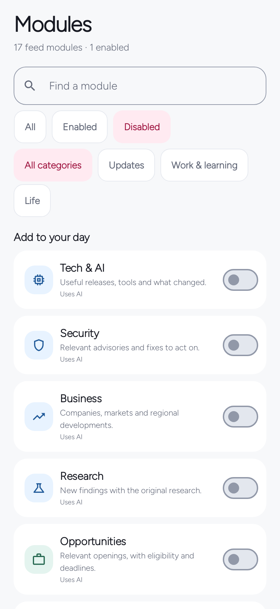

Use MeBot
Choose your modules
Choose the updates you want to see, then tune each module’s purpose, preferences, and approved context.
In the appModules
On this page
Find the whole catalog
Use Find a module, All / Enabled / Disabled, and the category filters together. All modules on Feed opens the full catalog. Add to your day opens the disabled selection so you can see what you have not enabled.
Clearing filters restores the complete list. The catalog has 16 built-in kinds plus custom Watchlists, with up to 32 saved feed modules in total. New catalog additions arrive paused so an update does not rewrite your choices.


Set a useful focus
- Open a module’s Module settings.
- Read its Default focus. It supplies reusable editorial guidance without inventing personal facts.
- Optionally narrow the topic, set the kind-specific preferences, and select approved notes under Personalization.
- Save your changes and refresh the feed when ready.
Use default focus clears a custom topic. Reset these preferences clears only preference overrides. Neither action grants permission to unrelated context notes.
All kinds except Weather offer Content language: App language / English / Kiswahili. An explicit module language or place overrides the general profile value for that module. Leave a place empty to use the profile region.
Arrange your feed filters
Under Your modules, hold a drag handle and move a module to change its position. The order is saved and used for the Feed filters. Drag toward an edge to reach more positions.
Use the accessible Move up and Move down actions if dragging is inconvenient. Moving a filtered selection preserves the other modules’ positions. Simply filtering the catalog never changes the order.
All 17 module kinds
The first option in each list below is the default. Each kind adds its own guidance to discovery and AI detail/search requests; your topic and preferences narrow that guidance.
| Module · kind | Default purpose | Preferences |
|---|---|---|
News · news | Recent developments, what changed and the practical consequence. | Coverage: Balanced / Local / World; city or region. |
Tech & AI · technology | Useful capabilities, releases and original documentation. | Focus: All / AI / Software / Infrastructure / Hardware. |
Security · security | Vendor advisories, verified affected versions and documented fixes. | Focus: All / Software / Cloud / Networks; urgency: All / Critical first. |
Business · business | Business and policy developments with practical implications and dated figures. | Focus: All / Regional / Operations / Markets; city or region. |
Research · science | Original research, evidence and a material limitation. | Focus: All / AI / Health / Climate / Space. |
Opportunities · opportunities | Active openings, contracts and grants with official application links. | Type: All / Jobs / Contracts / Grants; work location: Any / Local / Remote; city or region. |
Scholarships · scholarships | Funding, eligibility, intake and application dates. | Level: Any / Masters / PhD; funding: Any / Fully funded. |
Learn · learning | A practical lesson or guide with prerequisites and a starting resource. | Level: Any / Beginner / Intermediate / Advanced; format: Any / Guides / Courses / Videos; cost: Any / Free access. |
Open source · github | Maintained repositories and releases with a concrete use. | Focus: All / Tools / Libraries / Self-hosted; code language: Any / Python / JavaScript / PHP / Go / Rust. |
Weather · weather | Current conditions and near-term forecast for a configured place. | City or region. No GPS permission. |
Watch · entertainment | Spoiler-free films/series and official trailers suited to approved taste. | Type: Films and series / Films / Series; mood: Any / Tense / Thoughtful / Light. |
Music & practice · music | Listening discoveries, performances and instrument lessons. | Focus: A mix / Listening / Practice; format: Any / Performances / Lessons. |
Clips · media | Useful explainers, demonstrations and interviews from original/official channels. | Focus: All / Explainers / Demonstrations / Interviews / News; length: Up to 10 min / Up to 3 min / Any. |
Events · events | Upcoming events with date, timezone and organizer registration links. | Attendance: Any / Nearby / Online; when: Next 30 days / Next 7 days; city or region. |
Places · travel | Specific places and practical visitor information. | Focus: All / Weekend trips / Outdoors / Culture; cost: Any / Lower cost; city or region. |
Horoscope · horoscope | A short optional entertainment reading. | Zodiac sign; focus: General / Work / Relationships / Reflection; tone: Calm / Playful. |
Watchlist · watch | Current updates for a custom topic. Create one with Follow a topic. | Name and topic; format: Any / Articles / Videos. |
Weather, Horoscope, and Watchlists
Weather needs a recognizable city or region and uses public weather data. It does not request GPS. Horoscope needs a selected sign before Show in feed can be enabled. It is optional entertainment and is excluded from factual search and feed alerts.
Watch is for films and series. Watchlist follows a custom topic: use Follow a topic, give it a name and focus, and choose Articles, Videos, or Any format. Context approved for the watch kind is shared across custom Watchlists.
Pausing a module stops its updates without deleting saved stories. Removing a custom Watchlist also keeps stories already saved.
Sources and alerts
With a capable connected AI, modules can research current web sources using their focus, preferences, and approved context. Public adapters are available for News through Hacker News, Weather through Open-Meteo, and Open source through GitHub. These adapters do not connect a private GitHub account or calendar.
Optional RSS/Atom sources remain available under a module’s advanced controls, with up to six URLs. They are one source option, not a prerequisite for AI discovery. Most other modules need connected AI or configured feeds to produce current content.
Per-module alerts work together with You → Background updates, Android notification permission, quiet hours, and the daily digest rule. An empty supported-source result is possible; the app should not fill it with invented news.
Written for MeBot 0.6.1. Native screen examples use synthetic host-test fixtures. See the verification record for what was tested and the remaining device/provider checks.